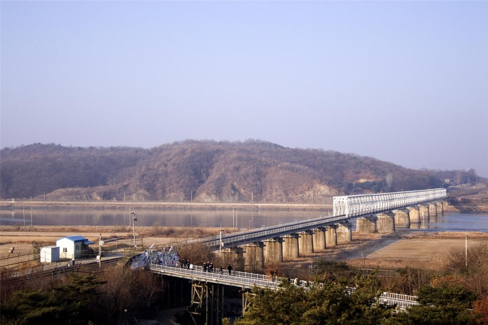

임진강 필승교 수위 4m 넘어… 북한 황강댐 방류 영향
임진강 필승교 수위가 4m를 넘어섰다. 북한 황강댐 방류의 영향으로 분석되며, 하류 지역 주민의 안전 관리가 요구된다.
유선경 기자 · 2026.07.22
橋사회

임진강 필승교 수위가 4m를 넘어섰고, 북한 황강댐 방류가 영향을 준 것으로 보인다고 경향신문이 전했다. 하류 지역의 수위 변화에 주의가 필요하다.
광고 문의 · 300×250임진강은 북한에서 남한으로 흐르는 하천으로, 상류의 댐 방류가 하류 수위에 직접 영향을 준다. 사전 통보 없는 방류는 하류 지역의 안전 관리에 어려움을 준다는 지적이 오래전부터 있었다.
당국은 수위 변화를 실시간으로 관측하고, 필요시 야영객·어민 등에게 대피와 접근 자제를 안내한다. 여름철 집중호우와 상류 방류가 겹치면 수위가 빠르게 오를 수 있어 각별한 주의가 요구된다.
이런 사안은 남북 간 하천 정보 공유의 필요성을 다시 부각한다. 재해 예방을 위한 실무적 협력은 정치 상황과 별개로 주민 안전에 직결되는 문제다.
華橋時報는 재해 안전 정보를 정확히 전하는 것을 공익으로 본다. 강 하류에 사는 주민의 안전은 국적을 떠나 모두가 함께 지켜야 할 사안이다.
출처·참고 (사실 확인용 — 본문은 직접 재작성)
· 경향신문
· 경향신문